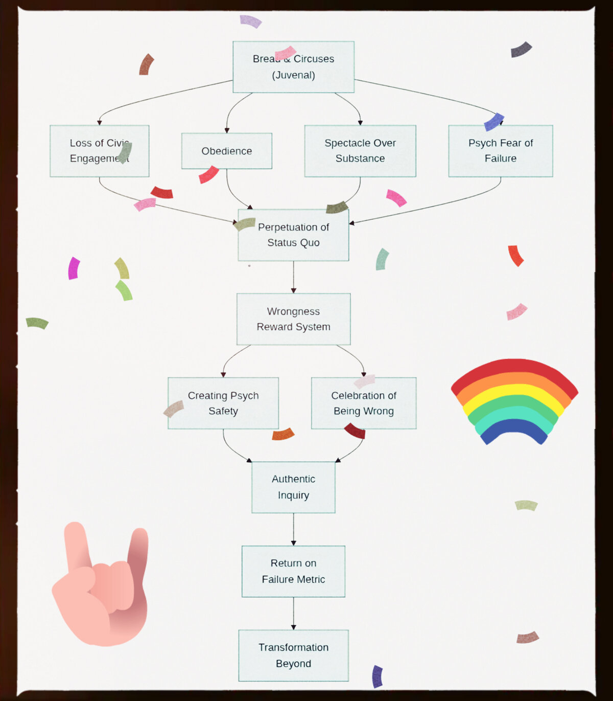

The Modern Coliseum
In Rome, it was gladiators and grain. Today, it’s dollar-menu bread, algorithmic circuses, and glowing rectangles that double as pocket-sized coliseums. The formula hasn’t changed: pacify the masses, feed them crumbs, and rebrand obedience as freedom.
Bread arrives as debt wrapped in loyalty points, food engineered to addict, and wages that evaporate faster than payday arrives.
The circuses? Sports leagues worshipped like religions, politicians auditioning for reality TV and reality TV participants becoming politicians, and influencers selling dopamine disguised as “content.” The slogans write themselves: Freedom is Surveillance. Debt is Prosperity. Division is Unity. Doublethink dressed in hashtags.
But the real spectacle is the hate. Wannabe tyrants — sociopathic, power-hungry manipulators — conjure enemies and invite the crowd to scream on command.
Thoughtcrime? That’s when someone dares to question the game itself — swiftly drowned out by outrage mobs, and algorithmic shadow bans.
Philosophers once warned that distraction was the tyrant’s tool. They didn’t foresee a civilization doom-scrolling its way through digital coliseums, mistaking meme warfare for politics and push notifications for civic duty. Caesar never had Instagram Stories — which is a shame, because he’d have nailed the “dictator unboxing a crown” reel.
Meanwhile, workers grind under rising costs, rights vanish behind euphemisms, and the public cheers so long as the games are loud enough. Rome didn’t fall because of enemies at the gates; it rotted because citizens embraced bread and circuses while calling it progress.
The Cycle of Pacification
This flowchart maps the journey from distraction to decay. It visualizes how the initial "Bread & Circuses" model creates a systemic fear of failure, stifles authentic inquiry, and ultimately paralyzes civic and personal growth, perpetuating a fragile and dependent status quo.

The Antidote: A Wrongness Reward System
The Foundation: Psychological Safety
A culture that rewards wrongness is a culture of profound psychological safety. It's the belief that one will not be punished or humiliated for speaking up with ideas, questions, or mistakes. This system operationalizes safety by explicitly celebrating the very acts that traditional cultures punish, moving from a zone of anxiety to one of high performance and shared learning. It fosters a growth mindset, where the goal isn't to *prove* you're right, but to continually *become* less wrong.
The Engine: Vulnerability as Strength
Peace and connection are born from the courage to be imperfect together. This system is designed to reward vulnerability—defined as uncertainty, risk, and emotional exposure—rather than emotional armor. In this framework, admitting "I was wrong" becomes the highest act of courage, creating the space for empathy, creativity, and genuine connection to flourish.
The Operating System: A Language for Peace
The system uses frameworks like Nonviolent Communication (NVC) to change the nature of conversation. Instead of judgment and blame, it focuses on observations, feelings, needs, and requests. By reframing misunderstandings and failures as "perfect data," it shifts the focus from who is right to understanding *why* a gap in perception exists, fostering peace by removing the triggers of fear and shame.
The Method: Process Over Outcome
This is the practical application. Instead of judging a final outcome, we collaboratively examine the process. If a standard isn't met, the question isn't "Who is to blame?" but rather, "Which part of our shared system failed us?" This moves the focus from personal fault to a shared responsibility for improving the underlying processes, fostering empathy and turning every failure into a constructive opportunity for evolution.
The Transformation
From a society of passive consumers to a culture of active learners.
A culture that rewards wrongness becomes a true learning organization. By replacing shame with curiosity and judgment with empathy, it creates an environment where peace and connection are the natural outcomes. This isn't just a better way to work or interact; it's a model for rebuilding the civic trust and authentic inquiry that "bread and circuses" is designed to destroy. It is the path from the status quo to meaningful transformation.